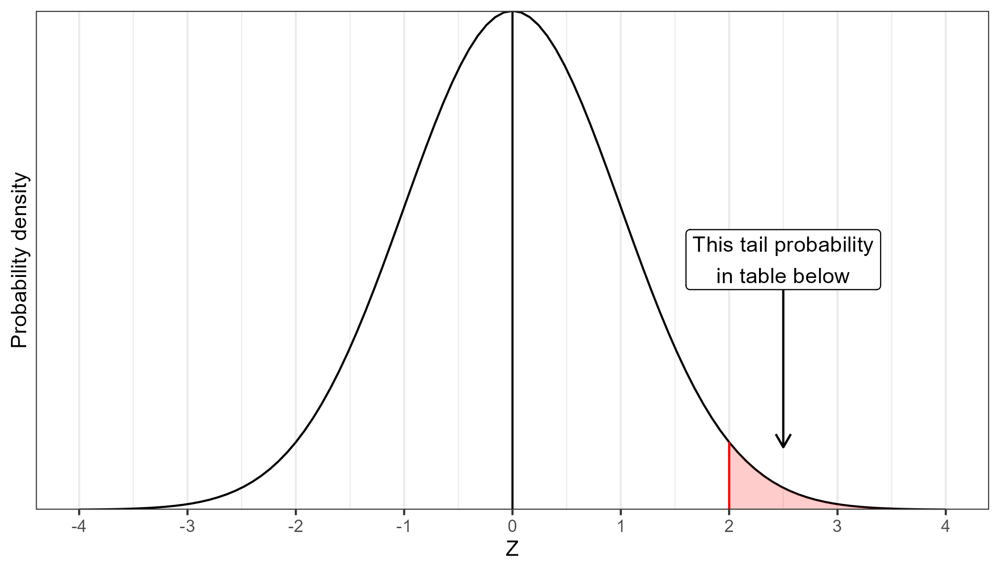

Appendix B — Z-table
Table gives the right-tail probability corresponding to a Z-value of the value in the Z-column plus the value in the column name, which indicates the second digit of the Z-score.
B.1 t-table
Table gives the t-value corresponding to the right-tail probability indicated by the columns.